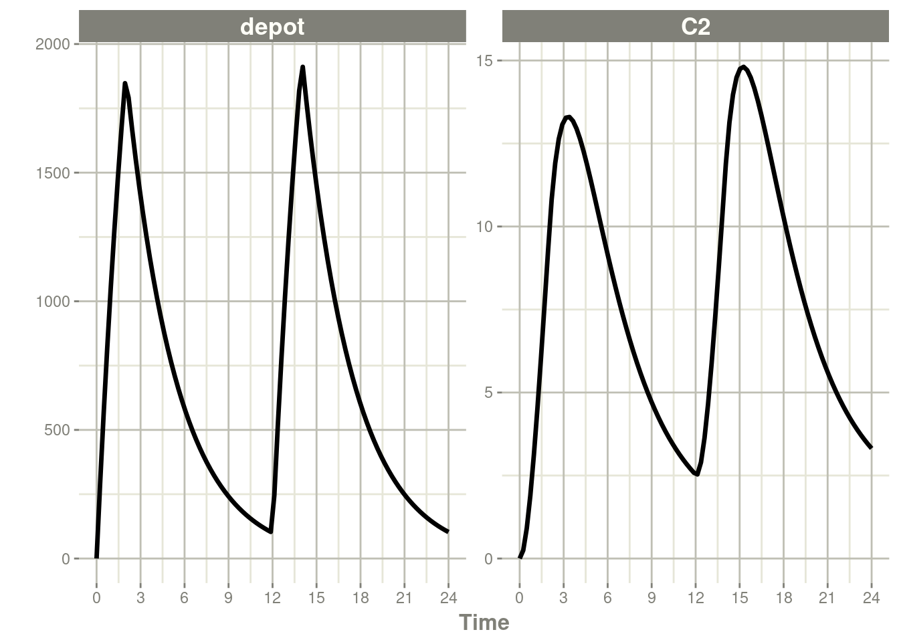
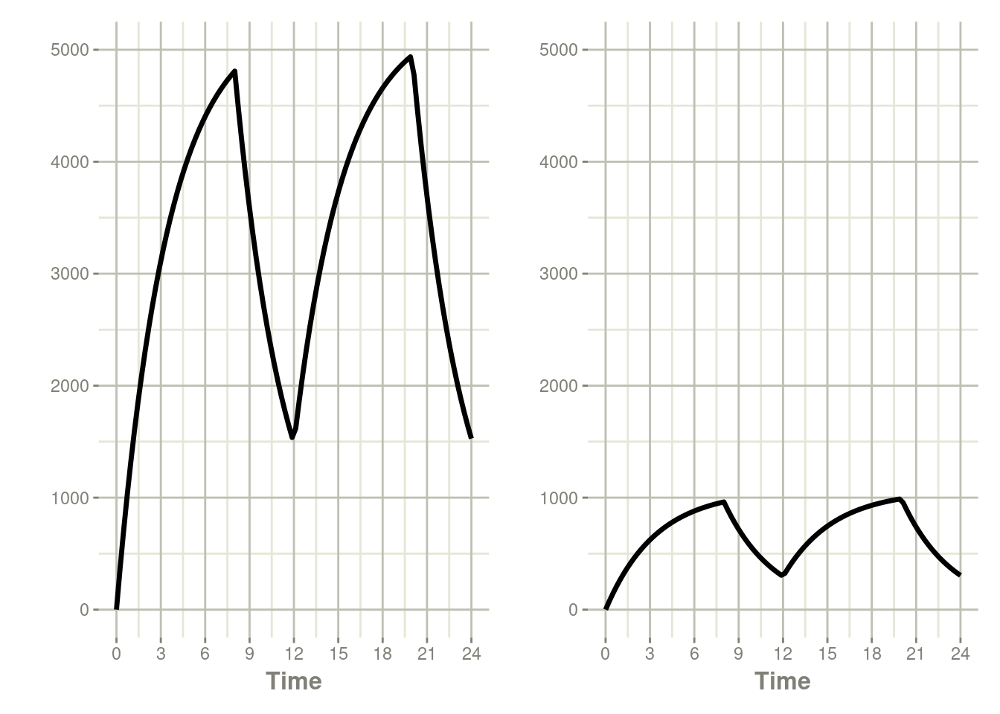
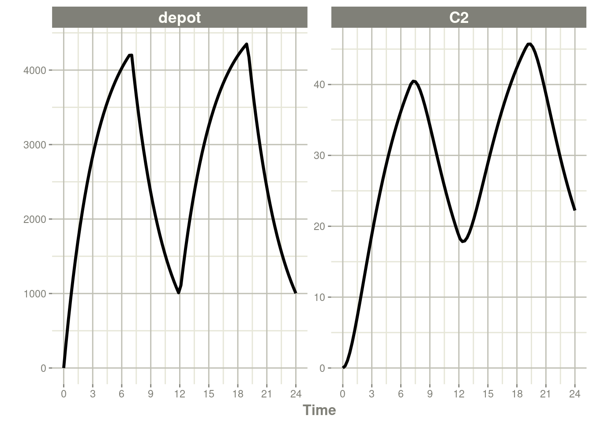
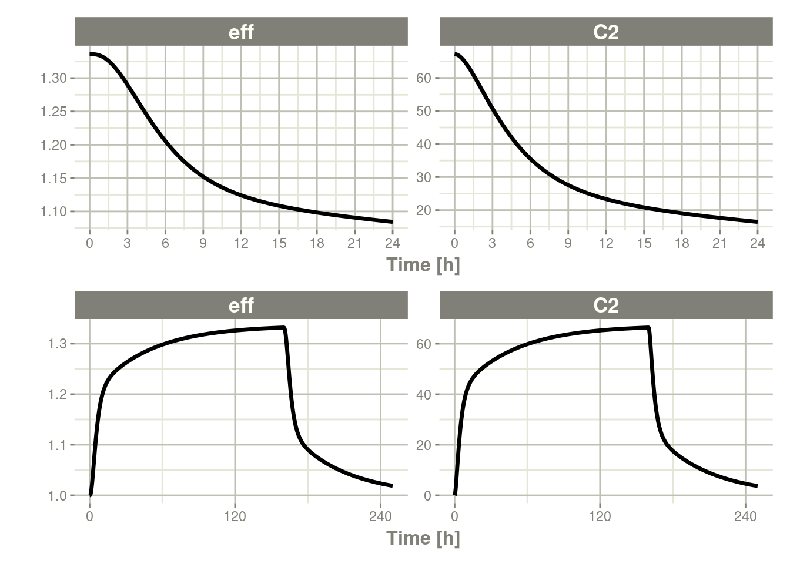
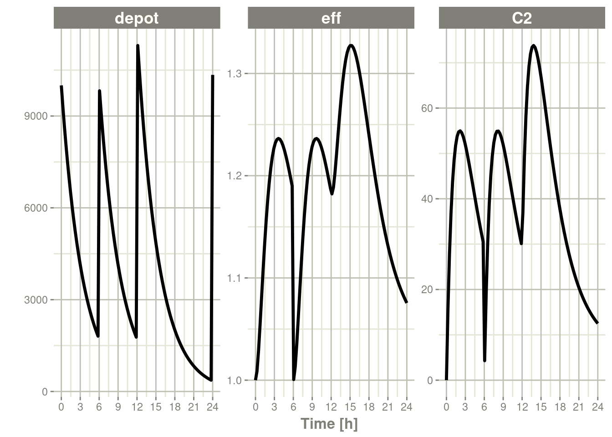
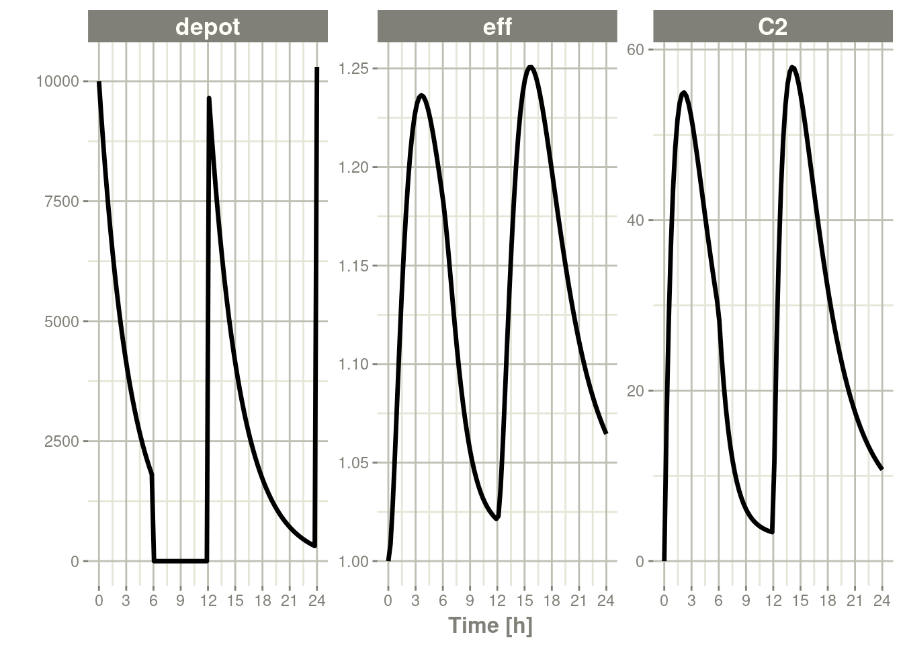
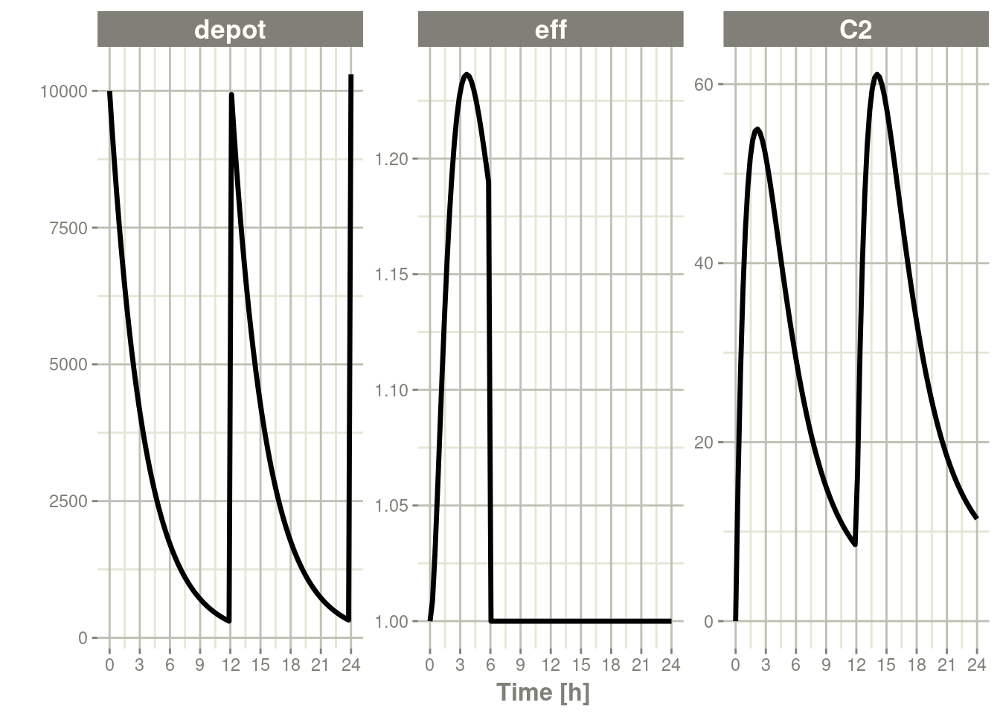

第七章rxode2事件
7.1rxode2事件表
通常，rxode2事件表格遵循NONMEM数据集约定，但有以下例外:
- 房室数据项(
cmt)可以是包含房室名称的字符串/因子- 您可以关闭房室编号为负或“-cmt”的房室，其中cmt是房室的名称。
- 房室数据项(
cmt)仍然可以是数字，房室的数量由模型中房室名称的外观来定义。这可能很繁琐，所以您可以通过在模型开始时使用cmt(cmtName)来更容易地指定房室编号。
- 额外的一列，
dur可指定输注持续的时长;- 生物利用度的变化将会改变输注速率
rate，因为dur/amt在输入数据中是固定的。 - 类似地，当为输注指定
rate/amt时，由于rate/amt在输入数据中是固定的，因此生物利用度将改变输液持续时间dur。
- 生物利用度的变化将会改变输注速率
- 一些不常见的NONMEM列不被rxode2支持，如:
pcmt,call。 - 支持的nonmems风格的事件(0:观测Observation, 1: 给药Dose, 2: 其他Other, 3: 重置Reset, 4: 重置+给药Reset+Dose)。支持的其他事件:
evid = 5或替换事件;这会将用AMT列中指定的值替换房室的值。这等价于deSolve=replace。evid = 6或倍增事件;这会将用AMT列中指定的值与房室的值相乘。这等价于deSolve=multiply。evid = 7或者转移室模型/幻影事件。这将给药放入dose()函数中，并计算自上次给药以来的时间tad()，但实际上并没有将给药放入房室。这使得transit()函数可以很容易地应用于房室。
在数据表中以下的条目是合法的:
| 数据条目 | 意义 | 备注 |
|---|---|---|
| iid | 个体的标识符 | 可以是整数、因子、字符还是数字 |
| time | 个体的时间 | 每个时间都是数字 |
| amt | 给药药量 | 给药时值应为正数，观测时值应为0或NA |
| rate | 输注速度 | 当指定此项时，输注时长dur=amt/rate |
| 当rate=-1，给药使用速率参数化;当rate=-2，给药使用持续时长参数化 | ||
| dur | 输注持续的时长 | 当指定此项时，输注速率rate=amt/dur |
| evid | 事件标识符 | 0=观察;1=给药;2=其他;3=重置;4=重置+给药;5=替换;6=倍数;7=转移室 |
| cmt | 房室 | 表示给药或观测事件所处的房室的名称 |
| ss | 稳态标志 | 0=非稳态;1=稳定状态;2=稳态+先前状态 |
| ii | 给药间隔 | 给药之间的间隔时间。 |
| addl | 额外附加的给药次数 | 额外附件的与当前给药相同的给药次数。 |
另外应注意:
evid可以是经典的RxODE(描述在这里)，或也可以是上面描述的NONMEM风格的evid。NONMEM的DV不是必需的;rxode2是一个ODE求解框架。NONMEM的形状不是必需的，因为它是在EVID。- rxode2它可以接受
deSolve兼容的数据框，而不是NONMEM-兼容的数据，。
当返回rxode2已求解的数据集时，根据求解器选项，您可能会看到一些额外的事件id (EVID):
EVID = -1输注速率参数化，输注结束的时间(对应于rate= -1【译者注：见7.3节】）EVID = -2输注持续时长参数化，输注结束的时间(对应于rate= -2【译者注：见7.3节】）EVID = -10当指定零级输注速率时，输注速率结束的时间(对应于rate> 0【译者注：见7.3节】）EVID = -20当指定零级输注速率时，输注持续时长结束的时间(对应于Dur > 0【译者注：见7.3节】）Evid = 101,102,103，…这些对应于1，2，3模型事件时间(mtime）.
这些只能在使用adddose =TRUE和subsetNonmem=FALSE选项组合进行求解时访问。如果你想看到同经典的EVID等价的，你可以使用adddose =NA。
为了说明事件类型，我们将使用rxode2中原始的教程中的模型用于举例。
library(rxode2)
### Model from rxode2 tutorial
m1 < - rxode({
KA =2.94e-01;
CL =1.86e+01;
V2 =4.02e+01;
Q =1.05e+01;
V3 =2.97e+02;
kin=1;
Kout =1;
EC50 =200;
### Added modeled bioavaiblity, duration and rate
fdepot = 1;
durDepot = 8;
rateDepot = 1250;
C2 = centr/V2;
C3 = peri/V3;
d/dt(depot) =-KA*depot;
f(depot) = fdepot
dur(depot) = durDepot
rate(depot) = rateDepot
d/dt(centr) = KA*depot - CL*C2 - Q*C2 + Q*C3;
d/dt(peri) = Q*C2 - Q*C3;
d/dt(eff) = Kin - Kout*(1-C2/(EC50+C2))*eff;
eff(0) = 1
});7.2单次给药/额外附加的给药
单次给药是rxode2中默认的给药类型，仅需要提供amt/dose。请注意，这使用了rxode2事件表中描述的便利函数et()
ev <- et(timeUnits="hr") %>%
et(amt=10000, ii=12,until=24) %>%
et(seq(0, 24, length.out=100))
ev#> ── EventTable with 101 records ──
#> 1 dosing records (see x$get.dosing(); add with add.dosing
#> or et)
#> 100 observation times (see x$get.sampling(); add with
#> add.sampling or et)
#> multiple doses in `addl` columns, expand with x$expand();
#> or etExpand(x)
#> ── First part of x: ──
#> # A tibble: 101 × 5
#> time amt ii addl evid
#> [h] <dbl> [h] <int> <evid>
#> 1 0 NA NA NA 0:Observation
#> 2 0 10000 12 2 1:Dose (Add)
#> 3 0.242 NA NA NA 0:Observation
#> 4 0.485 NA NA NA 0:Observation
#> 5 0.727 NA NA NA 0:Observation
#> 6 0.970 NA NA NA 0:Observation
#> 7 1.21 NA NA NA 0:Observation
#> 8 1.45 NA NA NA 0:Observation
#> 9 1.70 NA NA NA 0:Observation
#> 10 1.94 NA NA NA 0:Observation
#> # … with 91 more rows【译者注：因为上面的代码全是输出的注释，所以虽然是代码，这次也对上述内容进行下翻译，并同时提供翻译和未翻译版，便于读者理解，下文为对上文代码的翻译】
#>── 事件表，其中包含有101条记录 ──
#>1个给药记录(参见x$get.dosing();可使用add.dosing
#>或et添加)
#>100次观测(参见x$get.samping();可使用add.Samples
#>或et添加)
#>addl列中的多次给药，可使用x$Expand()展开;
#>或etExpand(X)
#>── 第一部分 关于x： ──
#>
#A Tibble：101×5
#> 时间 药量 给药间隔 附加给药次数 事件标志
#> [h] <dbl> [h] <int> <evid>
#>1 0 NA NA NA 0：观测
#>2 0 10000 12 2 1：给药(及额外附加)
#>3 0.242 NA NA NA 0：观测
#>4 0.485 NA NA NA 0：观测
#>5 0.727 NA NA NA 0：观测
#>6 0.970 NA NA NA 0：观测
#>7 1.21 NA NA NA 0：观测
#>8 1.45 NA NA NA 0：观测
#>9 1.70 NA NA NA 0：观测
#>10 1.94 NA NA NA 0：观测
#>
#…后续还有了91行输出内容rxSolve(m1, ev) %>% plot(C2) +
xlab("Time")
7.3输注给药
rxode2支持几种不同类型的输注实现形式:
已知输注速率的输注(
rate）【译者注：常见于已知道输注速率的静脉输液;此时应在事件表中给出rate，并且rate的值应大于0】已知输注时长的输注(
dur）【译者注：常见于已知道输注持续时长的静脉输液;此时应在事件表中给出dur，并且dur的值应大于0】需要估计输注速率的输注(零级速率吸收)【译者注：常见于将吸收处理为零级速率吸收，并需要估计吸收的零级速率常数;此时应在事件表中给出
rate，并且rate的值应为-1】需要估计输注时长的输注(零级速率吸收)【译者注：常见于将吸收处理为零级速率吸收，并需要估计吸收的持续的时长;此时应在事件表中给出
rate，并且rate的值应为-2】
【译者注：对于0级速率吸收，模型参数化时存在4种形式，对应上述的4中实现形式：1人为可以控制的0级吸收（比如静脉输液），并且在数据中给出吸收速率;2人为可以控制的0级吸收（比如静脉输液），并且在数据中给出吸收持续的时长;3被近似认为是0级速率吸收，但仅知道药量，并需要估计吸收的0级速率常数;4被近似认为是0级速率吸收，但仅知道药量，并需要估计吸收持续的时长;】
7.3.1已知输注速率或输注时长的输注
下一种类型的事件是输注入;有两种方法可以指定输注;第一种是dur关键字。
一个例子是:
ev <- et(timeUnits="hr") %>%
et(amt=10000, ii=12,until=24, dur=8) %>%
et(seq(0, 24, length.out=100))
ev#> ── EventTable with 101 records ──
#> 1 dosing records (see x$get.dosing(); add with add.dosing
#> or et)
#> 100 observation times (see x$get.sampling(); add with
#> add.sampling or et)
#> multiple doses in `addl` columns, expand with x$expand();
#> or etExpand(x)
#> ── First part of x: ──
#> # A tibble: 101 × 6
#> time amt ii addl evid dur
#> [h] <dbl> [h] <int> <evid> [h]
#> 1 0 NA NA NA 0:Observation NA
#> 2 0 10000 12 2 1:Dose (Add) 8
#> 3 0.242 NA NA NA 0:Observation NA
#> 4 0.485 NA NA NA 0:Observation NA
#> 5 0.727 NA NA NA 0:Observation NA
#> 6 0.970 NA NA NA 0:Observation NA
#> 7 1.21 NA NA NA 0:Observation NA
#> 8 1.45 NA NA NA 0:Observation NA
#> 9 1.70 NA NA NA 0:Observation NA
#> 10 1.94 NA NA NA 0:Observation NA
#> # … with 91 more rows【译者注：因为上面的代码全是输出的注释，所以虽然是代码，这次也对上述内容进行下翻译，并同时提供翻译和未翻译版，便于读者理解，下文为对上文代码的翻译】
#>── 事件表，其中包含有101条记录 ──
#>1个给药记录(参见x$get.dosing();可使用add.dosing
#>或et添加)
#>100次观测(参见x$get.samping();可使用add.Samples
#>或et添加)
#>addl列中的多次给药，可使用x$Expand()展开;
#>或etExpand(X)
#>── 第一部分 关于x： ──
#>
#A Tibble：101×6
#> 时间 药量 给药间隔 附加给药次数 事件标志 输注时长
#> [h] <dbl> [h] <int> <evid> [h]
#>1 0 NA NA NA 0：观测 NA
#>2 0 10000 12 2 1：给药(及额外附加) 8
#>3 0.242 NA NA NA 0：观测 NA
#>4 0.485 NA NA NA 0：观测 NA
#>5 0.727 NA NA NA 0：观测 NA
#>6 0.970 NA NA NA 0：观测 NA
#>7 1.21 NA NA NA 0：观测 NA
#>8 1.45 NA NA NA 0：观测 NA
#>9 1.70 NA NA NA 0：观测 NA
#>10 1.94 NA NA NA 0：观测 NA
#…后续还有了91行输出内容rxSolve(m1, ev) %>% plot(depot, C2) +
xlab("Time")
另一种，它也可以由rate组件指定:
ev <- et(timeUnits="hr") %>%
et(amt=10000, ii=12,until=24, rate=10000/8) %>%
et(seq(0, 24, length.out=100))
ev#> ── EventTable with 101 records ──
#> 1 dosing records (see x$get.dosing(); add with add.dosing
#> or et)
#> 100 observation times (see x$get.sampling(); add with
#> add.sampling or et)
#> multiple doses in `addl` columns, expand with x$expand();
#> or etExpand(x)
#> ── First part of x: ──
#> # A tibble: 101 × 6
#> time amt rate ii addl evid
#> [h] <dbl> <rate/dur> [h] <int> <evid>
#> 1 0 NA NA NA NA 0:Observation
#> 2 0 10000 1250 12 2 1:Dose (Add)
#> 3 0.242 NA NA NA NA 0:Observation
#> 4 0.485 NA NA NA NA 0:Observation
#> 5 0.727 NA NA NA NA 0:Observation
#> 6 0.970 NA NA NA NA 0:Observation
#> 7 1.21 NA NA NA NA 0:Observation
#> 8 1.45 NA NA NA NA 0:Observation
#> 9 1.70 NA NA NA NA 0:Observation
#> 10 1.94 NA NA NA NA 0:Observation
#> # … with 91 more rows【译者注：因为上面的代码全是输出的注释，所以虽然是代码，这次也对上述内容进行下翻译，并同时提供翻译和未翻译版，便于读者理解，下文为对上文代码的翻译】
#>── 事件表，其中包含有101条记录 ──
#>1个给药记录(参见x$get.dosing();可使用add.dosing
#>或et添加)
#>100次观测(参见x$get.samping();可使用add.Samples
#>或et添加)
#>addl列中的多次给药，可使用x$Expand()展开;
#>或etExpand(X)
#>── 第一部分 关于x： ──
#>
#A Tibble：101×6
#> 时间 药量 速率 给药间隔 附加给药次数 事件标志
#> [h] <dbl> <rate/dur> [h] <int> <evid>
#>1 0 NA NA NA NA 0：观测
#>2 0 10000 1250 12 2 1：给药(及额外附加)
#>3 0.242 NA NA NA NA 0：观测
#>4 0.485 NA NA NA NA 0：观测
#>5 0.727 NA NA NA NA 0：观测
#>6 0.970 NA NA NA NA 0：观测
#>7 1.21 NA NA NA NA 0：观测
#>8 1.45 NA NA NA NA 0：观测
#>9 1.70 NA NA NA NA 0：观测
#>10 1.94 NA NA NA NA 0：观测
#…后续还有了91行输出内容rxSolve(m1, ev) %>% plot(depot, C2) +
xlab("Time")
上述两种实现方式是相同的，除了生物利用度如何输注改变之外。
在使用rate建模的情况下，当生物利用度减小，输注时长也会减小，这与在NONMEM中一样。例如:
rxSolve(m1, ev, c(fdepot=0.25)) %>% plot(depot, C2) +
xlab("Time")
同样，当增加生物利用度时，输注时长也会增加。
rxSolve(m1, ev, c(fdepot=1.25)) %>% plot(depot, C2) +
xlab("Time")
这种行为的基本原理是，rate和amt是由事件表指定的，因此，随着生物利用度的增加，唯一可以改变的是输注的持续时间。
与指定rate类似，如果您在事件表中指定amt和dur组件，生物利用度变化也会影响输注速率rate。
ev <- et(timeUnits="hr") %>%
et(amt=10000, ii=12,until=24, dur=8) %>%
et(seq(0, 24, length.out=100))你可以在下面的图中看到，生物利用度变化对rate影响而不是对输注持续时长影响的对比:
library(ggplot2)
library(patchwork)
p1 <- rxSolve(m1, ev, c(fdepot=1.25)) %>% plot(depot) +
xlab("Time") + ylim(0,5000)
p2 <- rxSolve(m1, ev, c(fdepot=0.25)) %>% plot(depot) +
xlab("Time")+ ylim(0,5000)
### Use patchwork syntax to combine plots
p1 * p2
7.3.2需要估计输注时长或输注速率的输注(零级速率吸收)
您可以对输注持续时长进行建模，这相当于NONMEM的rate=-2。
ev <- et(timeUnits="hr") %>%
et(amt=10000, ii=12,until=24, rate=-2) %>%
et(seq(0, 24, length.out=100))
ev#> ── EventTable with 101 records ──
#> 1 dosing records (see x$get.dosing(); add with add.dosing
#> or et)
#> 100 observation times (see x$get.sampling(); add with
#> add.sampling or et)
#> multiple doses in `addl` columns, expand with x$expand();
#> or etExpand(x)
#> ── First part of x: ──
#> # A tibble: 101 × 6
#> time amt rate ii addl evid
#> [h] <dbl> <rate/dur> [h] <int> <evid>
#> 1 0 NA NA NA NA 0:Observation
#> 2 0 10000 -2:dur 12 2 1:Dose (Add)
#> 3 0.242 NA NA NA NA 0:Observation
#> 4 0.485 NA NA NA NA 0:Observation
#> 5 0.727 NA NA NA NA 0:Observation
#> 6 0.970 NA NA NA NA 0:Observation
#> 7 1.21 NA NA NA NA 0:Observation
#> 8 1.45 NA NA NA NA 0:Observation
#> 9 1.70 NA NA NA NA 0:Observation
#> 10 1.94 NA NA NA NA 0:Observation
#> # … with 91 more rows【译者注：因为上面的代码全是输出的注释，所以虽然是代码，这次也对上述内容进行下翻译，并同时提供翻译和未翻译版，便于读者理解，下文为对上文代码的翻译】
#>── 事件表，其中包含有101条记录 ──
#>1个给药记录(参见x$get.dosing();可使用add.dosing
#>或et添加)
#>100次观测(参见x$get.samping();可使用add.Samples
#>或et添加)
#>addl列中的多次给药，可使用x$Expand()展开;
#>或etExpand(X)
#>── 第一部分 关于x： ──
#>
#A Tibble：101×6
#> 时间 药量 速率 给药间隔 附加给药次数 事件标志
#> [h] <dbl> <rate/dur> [h] <int> <evid>
#>1 0 NA NA NA NA 0：观测
#>2 0 10000 -2:dur 12 2 1：给药(及额外附加)
#>3 0.242 NA NA NA NA 0：观测
#>4 0.485 NA NA NA NA 0：观测
#>5 0.727 NA NA NA NA 0：观测
#>6 0.970 NA NA NA NA 0：观测
#>7 1.21 NA NA NA NA 0：观测
#>8 1.45 NA NA NA NA 0：观测
#>9 1.70 NA NA NA NA 0：观测
#>10 1.94 NA NA NA NA 0：观测
#…后续还有了91行输出内容rxSolve(m1, ev, c(durDepot=7)) %>% plot(depot, C2) +
xlab("Time")
同样，您也可以对吸收速率进行建模。这相当于NONMEM的rate=-1，也是在rxode2的事件表中指定数据项的方式。
ev <- et(timeUnits="hr") %>%
et(amt=10000, ii=12,until=24, rate=-1) %>%
et(seq(0, 24, length.out=100))
ev#> ── EventTable with 101 records ──
#> 1 dosing records (see x$get.dosing(); add with add.dosing
#> or et)
#> 100 observation times (see x$get.sampling(); add with
#> add.sampling or et)
#> multiple doses in `addl` columns, expand with x$expand();
#> or etExpand(x)
#> ── First part of x: ──
#> # A tibble: 101 × 6
#> time amt rate ii addl evid
#> [h] <dbl> <rate/dur> [h] <int> <evid>
#> 1 0 NA NA NA NA 0:Observation
#> 2 0 10000 -1:rate 12 2 1:Dose (Add)
#> 3 0.242 NA NA NA NA 0:Observation
#> 4 0.485 NA NA NA NA 0:Observation
#> 5 0.727 NA NA NA NA 0:Observation
#> 6 0.970 NA NA NA NA 0:Observation
#> 7 1.21 NA NA NA NA 0:Observation
#> 8 1.45 NA NA NA NA 0:Observation
#> 9 1.70 NA NA NA NA 0:Observation
#> 10 1.94 NA NA NA NA 0:Observation
#> # … with 91 more rows【译者注：因为上面的代码全是输出的注释，所以虽然是代码，这次也对上述内容进行下翻译，并同时提供翻译和未翻译版，便于读者理解，下文为对上文代码的翻译】
#>── 事件表，其中包含有101条记录 ──
#>1个给药记录(参见x$get.dosing();可使用add.dosing
#>或et添加)
#>100次观测(参见x$get.samping();可使用add.Samples
#>或et添加)
#>addl列中的多次给药，可使用x$Expand()展开;
#>或etExpand(X)
#>── 第一部分 关于x： ──
#>
#A Tibble：101×6
#> 时间 药量 速率 给药间隔 附加给药次数 事件标志
#> [h] <dbl> <rate/dur> [h] <int> <evid>
#>1 0 NA NA NA NA 0：观测
#>2 0 10000 -1:rate 12 2 1：给药(及额外附加)
#>3 0.242 NA NA NA NA 0：观测
#>4 0.485 NA NA NA NA 0：观测
#>5 0.727 NA NA NA NA 0：观测
#>6 0.970 NA NA NA NA 0：观测
#>7 1.21 NA NA NA NA 0：观测
#>8 1.45 NA NA NA NA 0：观测
#>9 1.70 NA NA NA NA 0：观测
#>10 1.94 NA NA NA NA 0：观测
#>
#…后续还有了91行输出内容rxSolve(m1, ev, c(rateDepot=10000/3)) %>% plot(depot, C2) +
xlab("Time")
7.4稳态
以事件表中”给药”药量信息和“给出的给药间隔”信息重复足够多次给药直到稳态，然后基于稳态时的给药进行求解。【译者注：即到达稳态时的时间是事件表中SS=1时的时间，有关SS的进一步的中文解释可以见译者所著的Phoenix的输入选项4 稳态 SS一文】
ev <- et(timeUnits="hr") %>%
et(amt=10000, ii=12, ss=1) %>%
et(seq(0, 24, length.out=100))
ev#> ── EventTable with 101 records ──
#> 1 dosing records (see x$get.dosing(); add with add.dosing
#> or et)
#> 100 observation times (see x$get.sampling(); add with
#> add.sampling or et)
#> ── First part of x: ──
#> # A tibble: 101 × 5
#> time amt ii evid ss
#> [h] <dbl> [h] <evid> <int>
#> 1 0 NA NA 0:Observation NA
#> 2 0 10000 12 1:Dose (Add) 1
#> 3 0.242 NA NA 0:Observation NA
#> 4 0.485 NA NA 0:Observation NA
#> 5 0.727 NA NA 0:Observation NA
#> 6 0.970 NA NA 0:Observation NA
#> 7 1.21 NA NA 0:Observation NA
#> 8 1.45 NA NA 0:Observation NA
#> 9 1.70 NA NA 0:Observation NA
#> 10 1.94 NA NA 0:Observation NA
#> # … with 91 more rows【译者注：因为上面的代码全是输出的注释，所以虽然是代码，这次也对上述内容进行下翻译，并同时提供翻译和未翻译版，便于读者理解，下文为对上文代码的翻译】
#>── 事件表，其中包含有101条记录 ──
#>1个给药记录(参见x$get.dosing();可使用add.dosing
#>或et添加)
#>100次观测(参见x$get.samping();可使用add.Samples
#>或et添加)
#>addl列中的多次给药，可使用x$Expand()展开;
#>或etExpand(X)
#>── 第一部分 关于x： ──
#>
#A Tibble：101×6
#> 时间 药量 给药间隔 附加给药次数 事件标志 稳态
#> [h] <dbl> [h] <int> <evid> <int>
#> 1 0 NA NA NA 0：观测 NA
#> 2 0 10000 12 2 1：给药(及额外附加) 1
#> 3 0.242 NA NA NA 0：观测 NA
#> 4 0.485 NA NA NA 0：观测 NA
#> 5 0.727 NA NA NA 0：观测 NA
#> 6 0.970 NA NA NA 0：观测 NA
#> 7 1.21 NA NA NA 0：观测 NA
#> 8 1.45 NA NA NA 0：观测 NA
#> 9 1.70 NA NA NA 0：观测 NA
#>10 1.94 NA NA NA 0：观测 NA
#…后续还有了91行输出内容rxSolve(m1, ev) %>% plot(C2)
7.4.1复杂加药的稳定状态
通过使用ss=2标志，您可以使用类似”早上100 mg vs晚上150 mg“这样的不太规整的给药方案【译者注：吐槽，原文使用nonstandard dosing(非标准给药)容此给药方案，但这种给药方案在临床挺”标准”的，仅仅是有些嵌套而已，这种嵌套给基于NCA的PK参数带来了些麻烦，估计作者是因此将此种方案定义为不标准;所以我基于我的上述理由将此翻译为不太规整，以此来表达原文作者想表达含义】基于线性动力学中的超定位原理(super-positioning)【译者注：没见过其他人在药动学中提到此词，我猜作者可能是想说线性药动学的线性叠加原理】到达稳态。这是通过:
- 保存所有状态值
- 重置所有状态，求解系统至稳态
- 将所有先前的状态值加回来
ev <- et(timeUnits="hr") %>%
et(amt=10000, ii=24, ss=1) %>%
et(time=12, amt=15000, ii=24, ss=2) %>%
et(time=24, amt=10000, ii=24, addl=3) %>%
et(time=36, amt=15000, ii=24, addl=3) %>%
et(seq(0, 64, length.out=500))
library(ggplot2)
rxSolve(m1, ev,maxsteps=10000) %>% plot(C2) +
annotate("rect", xmin=0, xmax=24, ymin=-Inf, ymax=Inf,
alpha=0.2) +
annotate("text", x=12.5, y=7,
label="Initial Steady State Period") +
annotate("text", x=44, y=7,
label="Steady State AM/PM dosing")
你可以看到，它需要一个完整的给药周期才能达到真正的复杂给药方案的稳态【译者注：此时到达稳态时的时间还是事件表中SS=1时的时间，Phoenix实现此类给药方案到达稳态的方式与此有些略微差异，是将SS=1和SS=2的信息卸载一行中的不同列并且SS=1，有关SS的进一步的中文解释可以见译者所著的Phoenix的输入选项4 稳态 SS一文】。
7.4.2输注或零阶吸收过程的稳态
rxode2支持的最后一种稳态是恒定输注速率数值直到输注到达稳态。这可以用与NONMEM相同的方式指定，即:
- 没有给药间间隔时间
ii=0 - 稳态标识
ss=1 - 输入已知的输注速率(此时事件表汇中
rate>0)，或估计输注速率(此时rate=-1)。 - 药量为零
amt=0 - 一旦达到稳态恒定输注，使用此记录时将关闭输注，就像NONMEM一样。
请注意，我们为模型指定输注持续时长的rate=-2没有多大意义，因为我们是在求解输注直到稳定状态。输注持续时长由稳态解指定。
还需要注意的是，这种输注至稳态的生物利用度变化也没有意义，因为它们既没有改变稳态输注的速率，也没有改变输注的持续时长。因此，这种给药事件的生物利用度参数化被忽略。
下面是一个例子:
ev <- et(timeUnits="hr") %>%
et(amt=0, ss=1,rate=10000/8)
p1 <- rxSolve(m1, ev) %>% plot(C2, eff)
ev <- et(timeUnits="hr") %>%
et(amt=200000, rate=10000/8) %>%
et(0, 250, length.out=1000)
p2 <- rxSolve(m1, ev) %>% plot(C2, eff)
library(patchwork)
p1 / p2
这不仅可以用于PK，也可以用于疾病过程的稳态。
7.5重置事件
重置事件通过evid=3或evid= reset实现，对于同时reset和dose, 由evid=4实现。
ev <- et(timeUnits="hr") %>%
et(amt=10000, ii=12, addl=3) %>%
et(time=6, evid=reset) %>%
et(seq(0, 24, length.out=100))
ev#> ── EventTable with 102 records ──
#> 2 dosing records (see x$get.dosing(); add with add.dosing
#> or et)
#> 100 observation times (see x$get.sampling(); add with
#> add.sampling or et)
#> multiple doses in `addl` columns, expand with x$expand();
#> or etExpand(x)
#> ── First part of x: ──
#> # A tibble: 102 × 5
#> time amt ii addl evid
#> [h] <dbl> [h] <int> <evid>
#> 1 0 NA NA NA 0:Observation
#> 2 0 10000 12 3 1:Dose (Add)
#> 3 0.242 NA NA NA 0:Observation
#> 4 0.485 NA NA NA 0:Observation
#> 5 0.727 NA NA NA 0:Observation
#> 6 0.970 NA NA NA 0:Observation
#> 7 1.21 NA NA NA 0:Observation
#> 8 1.45 NA NA NA 0:Observation
#> 9 1.70 NA NA NA 0:Observation
#> 10 1.94 NA NA NA 0:Observation
#> # … with 92 more rows【译者注：因为上面的代码全是输出的注释，所以虽然是代码，这次也对上述内容进行下翻译，并同时提供翻译和未翻译版，便于读者理解，下文为对上文代码的翻译】
#>── 事件表，其中包含有102条记录 ──
#>2个给药记录(参见x$get.dosing();可使用add.dosing
#>或et添加)
#>100次观测(参见x$get.samping();可使用add.Samples
#>或et添加)
#>addl列中的多次给药，可使用x$Expand()展开;
#>或etExpand(X)
#>── 第一部分 关于x： ──
#>
#A Tibble：102×5
#> 时间 药量 给药间隔 附加给药次数 事件标志
#> [h] <dbl> [h] <int> <evid>
#> 1 0 NA NA NA 0：观测
#> 2 0 10000 12 3 1：给药(及额外附加)
#> 3 0.242 NA NA NA 0：观测
#> 4 0.485 NA NA NA 0：观测
#> 5 0.727 NA NA NA 0：观测
#> 6 0.970 NA NA NA 0：观测
#> 7 1.21 NA NA NA 0：观测
#> 8 1.45 NA NA NA 0：观测
#> 9 1.70 NA NA NA 0：观测
#>10 1.94 NA NA NA 0：观测
#…后续还有了92行输出内容求解器显示了当系统在给药后6小时重置时，系统中发生的情况。
rxSolve(m1, ev) %>% plot(depot,C2, eff)
您可以看到所有房室都被重置为初始值。在下一次给药时开始给药的循环周期。
ev <- et(timeUnits="hr") %>%
et(amt=10000, ii=12, addl=3) %>%
et(time=6, amt=10000, evid=4) %>%
et(seq(0, 24, length.out=100))
ev#> ── EventTable with 102 records ──
#> 2 dosing records (see x$get.dosing(); add with add.dosing
#> or et)
#> 100 observation times (see x$get.sampling(); add with
#> add.sampling or et)
#> multiple doses in `addl` columns, expand with x$expand();
#> or etExpand(x)
#> ── First part of x: ──
#> # A tibble: 102 × 5
#> time amt ii addl evid
#> [h] <dbl> [h] <int> <evid>
#> 1 0 NA NA NA 0:Observation
#> 2 0 10000 12 3 1:Dose (Add)
#> 3 0.242 NA NA NA 0:Observation
#> 4 0.485 NA NA NA 0:Observation
#> 5 0.727 NA NA NA 0:Observation
#> 6 0.970 NA NA NA 0:Observation
#> 7 1.21 NA NA NA 0:Observation
#> 8 1.45 NA NA NA 0:Observation
#> 9 1.70 NA NA NA 0:Observation
#> 10 1.94 NA NA NA 0:Observation
#> # … with 92 more rows【译者注：因为上面的代码全是输出的注释，所以虽然是代码，这次也对上述内容进行下翻译，并同时提供翻译和未翻译版，便于读者理解，下文为对上文代码的翻译】
#>── 事件表，其中包含有102条记录 ──
#>2个给药记录(参见x$get.dosing();可使用add.dosing
#>或et添加)
#>100次观测(参见x$get.samping();可使用add.Samples
#>或et添加)
#>addl列中的多次给药，可使用x$Expand()展开;
#>或etExpand(X)
#>── 第一部分 关于x： ──
#>
#A Tibble：102×5
#> 时间 药量 给药间隔 附加给药次数 事件标志
#> [h] <dbl> [h] <int> <evid>
#> 1 0 NA NA NA 0：观测
#> 2 0 10000 12 3 1：给药(及额外附加)
#> 3 0.242 NA NA NA 0：观测
#> 4 0.485 NA NA NA 0：观测
#> 5 0.727 NA NA NA 0：观测
#> 6 0.970 NA NA NA 0：观测
#> 7 1.21 NA NA NA 0：观测
#> 8 1.45 NA NA NA 0：观测
#> 9 1.70 NA NA NA 0：观测
#>10 1.94 NA NA NA 0：观测
#…后续还有了92行输出内容在这种情况下，整个系统被重置并在重置时发生给药。
rxSolve(m1, ev) %>% plot(depot,C2, eff)
7.6关闭房室
您也可以关闭一个房室，这类似于重置事件。
ev <- et(timeUnits="hr") %>%
et(amt=10000, ii=12, addl=3) %>%
et(time=6, cmt="-depot", evid=2) %>%
et(seq(0, 24, length.out=100))
ev#> ── EventTable with 102 records ──
#> 2 dosing records (see x$get.dosing(); add with add.dosing
#> or et)
#> 100 observation times (see x$get.sampling(); add with
#> add.sampling or et)
#> multiple doses in `addl` columns, expand with x$expand();
#> or etExpand(x)
#> ── First part of x: ──
#> # A tibble: 102 × 6
#> time cmt amt ii addl evid
#> [h] <chr> <dbl> [h] <int> <evid>
#> 1 0 (obs) NA NA NA 0:Observation
#> 2 0 (default) 10000 12 3 1:Dose (Add)
#> 3 0.242 (obs) NA NA NA 0:Observation
#> 4 0.485 (obs) NA NA NA 0:Observation
#> 5 0.727 (obs) NA NA NA 0:Observation
#> 6 0.970 (obs) NA NA NA 0:Observation
#> 7 1.21 (obs) NA NA NA 0:Observation
#> 8 1.45 (obs) NA NA NA 0:Observation
#> 9 1.70 (obs) NA NA NA 0:Observation
#> 10 1.94 (obs) NA NA NA 0:Observation
#> # … with 92 more rows#>── 事件表，其中包含有102条记录 ──
#>2个给药记录(参见x$get.dosing();可使用add.dosing
#>或et添加)
#>100次观测(参见x$get.samping();可使用add.Samples
#>或et添加)
#>addl列中的多次给药，可使用x$Expand()展开;
#>或etExpand(X)
#>── 第一部分 关于x： ──
#>
#A Tibble：102×6
#> 时间 cmt 药量 给药间隔 附加给药次数 事件标志
#> [h] <chr> <dbl> [h] <int> <evid>
#> 1 0 (obs) NA NA NA 0：观测
#> 2 0 (default) 10000 12 3 1：给药(及额外附加)
#> 3 0.242(obs) NA NA NA 0：观测
#> 4 0.485(obs) NA NA NA 0：观测
#> 5 0.727(obs) NA NA NA 0：观测
#> 6 0.970(obs) NA NA NA 0：观测
#> 7 1.21 (obs) NA NA NA 0：观测
#> 8 1.45 (obs) NA NA NA 0：观测
#> 9 1.70 (obs) NA NA NA 0：观测
#>10 1.94 (obs) NA NA NA 0：观测
#…后续还有了92行输出内容求解器显示了这在系统中的作用:
rxSolve(m1, ev) %>% plot(depot,C2, eff)
在这种情况下，depot房室关闭，depot房室中的浓度被设置为初始值，但其他房室浓度/水平不重置。当depot房室发生另一次给药时，depot房室重新打开。
请注意，对房室的给药只会对被给药的房室起作用。因此，如果你关闭eff房室，即使另一个房室depot房室发生给药后，eff房室会仍然继续关闭。
ev <- et(timeUnits="hr") %>%
et(amt=10000, ii=12, addl=3) %>%
et(time=6, cmt="-eff", evid=2) %>%
et(seq(0, 24, length.out=100))
rxSolve(m1, ev) %>% plot(depot,C2, eff)
要重新打开房室，需要对此房室进行一次药量为零的给药或与为此房室添加一个evid=2的记录。
ev <- et(timeUnits="hr") %>%
et(amt=10000, ii=12, addl=3) %>%
et(time=6, cmt="-eff", evid=2) %>%
et(time=12,cmt="eff",evid=2) %>%
et(seq(0, 24, length.out=100))
rxSolve(m1, ev) %>% plot(depot,C2, eff)
7.7经典的rxode2事件
【译者注：由于rxode2还有前一代版本rxode，所以为了兼容性也支持前一代版本中的evid的编码方式，对于不了解前代前一代版本rxode读者，无需学习与了解此章节，跳过整个7.7章节即可。】
最初RxODE支持复合事件IDs;rxode2仍然支持这些参数，但使用常规的NONMEM数据集标准通常更有用，部分建模工具也使用该标准，如在rxode2类型文章中有描述到的NONMEM、Monolix和nlmixr。
通常，RxODE支持在下表中描述的单个事件idevid中进行事件编码。
| 100 + cmt | Infusion/Event Flag | 输注标志或事件标志 |
|---|---|---|
| 100 + cmt | 0 = bolus dose | 0 =注入式给药 |
| 1 = infusion (rate) | 1 =输注(速率) | |
| 2 = infusion (dur) | 2 =输注(时长) | |
| 6 = turn off modeled duration | 6 =关闭输注时长 | |
| 7 = turn off modeled rate | 7 =关闭输注速率 | |
| 8 = turn on modeled duration | 8 =打开输注时长 | |
| 9 = turn on modeled rate | 9 =打开输注速率 | |
| 4 = replace event | 4 =替换事件 | |
| 5 = multiply event | 5 =倍数事件 |
| < 99 cmt | SS flag & Turning of Compartment | SS标志和房室关闭 |
|---|---|---|
| < 99 cmt | 1 = dose | 1 =给药 |
| 10 = Steady state 1 (equivalent to SS=1) | 10 =稳态1(相当于SS=1) | |
| 20 = Steady state 2 (equivalent to SS=2) | 20 =稳态2(相当于SS=2) | |
| 30 = Turn off a compartment (equivalent to -CMT w/EVID=2) | 30 =关闭一个房室(相当于-CMT w/EVID=2) |
经典的EVID将上表中的数字连接起来，因此向1号房室的输注将是10101，向199号室的输注将是119901。
支持EVID= 0(观测)、EVID=2(其他类型事件)和EVID=3。在内部，EVID=9是一个非观测事件，确保系统初始化为零;EVID=9不能手动设置。EVID 10-99表示参数化模型的时间干预，类似于NONMEM的MTIME(model-event-times)。这与药量(amt)和时间列一起指定ODE系统中的事件。
对于指定的EVIDs > 100的输注，amt列表示速率值。
对于输注标志1和2 +amt打开输注到特定的房室-amt关闭输注到特定的房室。要指定给药/持续时长，请将给药记录放在持续时长开始或停止的时间。
对于使用输注速率/持续时长输注参数化的输注的标志，在输注喀什市标志之后必须有一个停止输注的记录。
这些数字连接在一起形成一个完整的RxODE事件ID，如下面的例子所示:
7.7.1使用经典RxODE的EVID设置注入给药示例
在第0时刻给#1号房室注入100剂量
| time | evid | amt |
|---|---|---|
| 0 | 101 | 100 |
| 0.5 | 0 | 0 |
| 1 | 0 | 0 |
在第0时刻给#99号房室注入100剂量
| 时间 | evid | amt |
|---|---|---|
| 0 | 9901 | 100 |
| 0.5 | 0 | 0 |
| 1 | 0 | 0 |
在第0时刻给$199号房室注入100剂量
| 时间 | evid | amt |
|---|---|---|
| 0 | 109901 | 100 |
| 0.5 | 0 | 0 |
| 1 | 0 | 0 |
7.7.2使用经典RxODE的EVID设置输注事件示例
对#1号房室以速率50输注1.5小时(使用生物利用度参数化时，生物利用度的变化会改变输注时长)
| time | evid | amt |
|---|---|---|
| 0 | 10101 | 50 |
| 0.5 | 0 | 0 |
| 1 | 0 | 0 |
| 1.5 | 10101 | -50 |
对#1号房室以速率50输注1.5小时(使用生物利用度参数化时，生物利用度的变化改变输注速率)
| time | evid | amt |
|---|---|---|
| 0 | 20101 | 50 |
| 0.5 | 0 | 0 |
| 1 | 0 | 0 |
| 1.5 | 20101 | -50 |
模型以输注速率参数化并且药量为50
| time | evid | amt |
|---|---|---|
| 0 | 90101 | 50 |
| 0 | 70101 | 50 |
| 0.5 | 0 | 0 |
| 1 | 0 | 0 |
模型以输注时长参数化并且药量为50
| time | evid | amt |
|---|---|---|
| 0 | 80101 | 50 |
| 0 | 60101 | 50 |
| 0.5 | 0 | 0 |
| 1 | 0 | 0 |
7.7.3使用经典RxODE的EVID设置稳态的例子
给药至#1号房室至达稳态
| time | evid | amt |
|---|---|---|
| 0 | 110 | 50 |
am50 pm 100给药至#1号房室至达稳
| time | evid | amt |
|---|---|---|
| 0 | 110 | 50 |
| 12 | 120 | 100 |
7.7.4使用经典RxODE的EVID关闭房室
在时间为12时关闭#1号房室
| time | evid | amt |
|---|---|---|
| 0 | 110 | 50 |
| 12 | 130 | NA |
在rxode2中的事件标识码被编码为单个事件编号evid。对于100以下的房室，编码如下:
- 对于观察事件的事件是
0。 - 对于特定的房室，注入给药定义为:
- 100*(房室号)+ 1
- 捕获
amt后给药
- 对于静脉注射【译者注：原文此处似乎笔误，此处应为静脉输注】给药，事件定义为:
- 10000 + 100*(房室号)+ 1
- 输注速率记录在
amt列 - 通过在输注停止时用相同的
EVID减法amt来关闭输注。
对于大于或等于100的房室，100位及以上的数字被转移到第100,000位数字。对于第99个房室的给药，注入房室的给药evid是9901，输注方式的给药evid是19901。第199房室的剂量是109901。第199室的输液剂量记录为119901。
7.9按使用类型描述的列
7.10特定数据集列的详细信息
下面的详细信息按列名的字母顺序排序。要按用途分组，请参阅上面的文档。
7.10.2 CENS/LIMIT列
CENS列是指示是否发生删失的指示列。对于药代动力学建模，通常在样品低于定量下限时进行删失。在rxode2内部保存这些值，以便nlmixr可以在似然计算中使用它们。
CENS = 0表示测量DV值时未删失。
CENS = 1表示一个值是左删失(或低于定量下限)，DV中的值是删失/定量极限。
CENS = -1表示一个值是右删失(或超过定量上限)，DV中的值为删失/定量极限。
LIMIT是关于nlmixr如何处理删失的附加信息，也存储在rxode2的数据结构中。当一个值处于删失状态时，比如低于定量下限1，您可能还会认为该值高于某个阈值，比如零。在这种情况下，0表示截尾值在0到1之间。
简而言之:
CENS = 0，LIMIT被忽略，因为观测值未删失
CENS = 1，个体预测值在(LIMIT, DV)范围内
CENS = -1，个体预测值在(DV, LIMIT)范围内